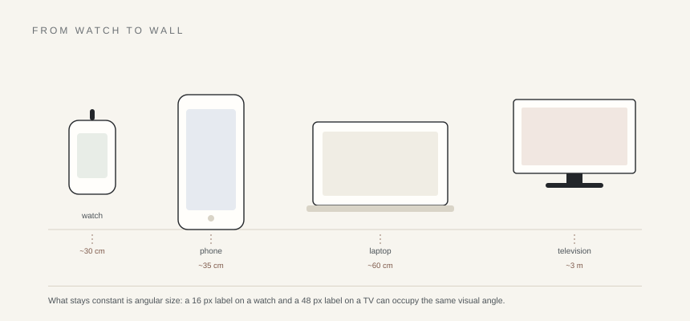

Chapter 07第七章
Scaling Beyond the Screen超越屏幕的尺度
The same book is read on a watch, a phone, a laptop, a wall, and eventually a headset. Perception does not scale linearly. This chapter is about adapting visual information across devices, bodies, and abilities. 同一本书，会在手表、手机、笔记本、墙面，乃至头显上被阅读。知觉不会线性缩放。本章讨论如何让视觉信息适配不同的设备、身体与能力。
Design for visual angle, not pixel count. A 16-pixel label on a watch and a 48-pixel label on a television can occupy the same angle in the eye. Bodies vary, contexts vary, and abilities vary. Accessibility is not a separate audience; it is the full range of human perception under real conditions. 为视角设计，而不是为像素数设计。手表上的 16 像素标签与电视上的 48 像素标签，在眼睛里可能占据相同的角度。身体在变，情境在变，能力也在变。可访问性不是一个单独的受众；它是真实条件下人类知觉的完整范围。
The geometry of reading阅读的几何学
A screen is not experienced in centimeters; it is experienced in degrees of visual angle. Angular size depends on physical size and viewing distance. That is why a phone at 35 centimeters and a television at three meters are different perceptual objects even when they show the same number of pixels. 屏幕不是以厘米被体验的，而是以视角被体验的。视角大小取决于物理尺寸与观看距离。这就是为什么 35 厘米处的手机与三米处的电视，即便像素数相同，也是不同的知觉对象。
Responsive design, as Ethan Marcotte framed it, is not a set of breakpoints. It is a way of letting the same content reorganize around the constraints of the device. The breakpoints are implementation details; the perceptual goal is continuity of reading. 如 Ethan Marcotte 所定义，响应式设计不是一组断点。它是让同一内容围绕设备约束重新组织的方式。断点只是实现细节；知觉目标才是阅读的连续性。
Line length is a good example. Long lines make it harder for the eye to return to the start of the next line; short lines increase the number of returns. The comfortable range is often quoted as 45 to 75 characters, but the evidence is context-dependent. The robust rule is to test the actual typeface at the actual size on the actual device. 行宽就是一个好例子。行太长，眼睛更难回到下一行开头；行太短，回扫次数又会增加。常被引用的舒适区间是 45 至 75 个字符，但证据依赖于情境。稳健的规则是：用真实字体、真实字号、真实设备去测试。
Small screens, big thumbs小屏幕，大手指
Touch targets are constrained by the body. WCAG 2.2 sets a minimum of 24 by 24 CSS pixels for pointer targets; Apple's guidance is 44 points, and Material's is 48 density-independent pixels. These numbers are not arbitrary: they reflect the size of a fingertip and the imprecision of a tap. 触摸目标受身体约束。WCAG 2.2 规定指针目标至少为 24×24 CSS 像素；Apple 的指南是 44 点，Material 是 48 密度无关像素。这些数字并非任意：它们反映了指尖的大小与点击的不精确性。
Fitts's law describes the time to acquire a target as a function of distance and target size. On a phone, distance is often set by the thumb's arc. Controls in the comfortable zone are faster and less error-prone; controls at the top corners demand a grip change. 菲茨定律把获取目标的时间描述为距离与目标大小的函数。在手机上，距离往往由拇指的活动弧线决定。位于舒适区的控件更快、更少出错；位于顶部角落的控件则要求改变握姿。
This is why bottom navigation became common, and why “put it at the top” is not always a neutral layout choice. The hand is part of the perceptual system. 这就是底部导航变得普遍的原因，也是“把它放在顶部”并不总是中性版式选择的原因。手，是知觉系统的一部分。
Bodies and abilities身体与能力
Presbyopia makes near vision harder with age; low vision reduces acuity or field; color vision deficiency changes the decoding of color; dyslexia affects word recognition and tracking; motor impairments change pointing precision; vestibular sensitivity changes tolerance for motion. Every one of these is a variation of the same visual system, not a separate species. 老视让近距视力随年龄下降；低视力降低锐度或视野；色觉缺陷改变颜色解码；阅读障碍影响字形识别与追踪；运动障碍改变指向精度；前庭敏感改变对运动的耐受。每一种都是同一视觉系统的变体，而不是另一个物种。
The practical checklist is unglamorous and effective: alternative text for meaningful images, captions and transcripts for media, a logical focus order, visible focus states, text that reflows at 200% zoom, and controls that work without a mouse. None of this is optional if the page is meant for the public. 实用清单并不华丽，但有效：为有意义的图片提供替代文本；为媒体提供字幕与文字稿；保持逻辑焦点顺序；让焦点状态可见；让文字在 200% 缩放下重排；让控件无需鼠标也能操作。如果页面面向公众，这些都不是可选项。
Accessibility is also a stress test. Designing for the edges—bright sunlight, small screens, tremor, low bandwidth—usually improves the experience for everyone in the middle. 可访问性还是一场压力测试。为边缘条件设计——强光、小屏、手抖、低带宽——通常会改善处在中间的大多数人的体验。

Context is a variable情境是一个变量
A page is rarely read in the conditions of a usability lab. It is read in sunlight, on a train, with a child talking, on a battery at 8%, in a second language, with one hand. Context changes contrast, attention, patience, and error rate. 页面很少在可用性实验室的条件下被阅读。它在阳光下、在火车上、在孩子说话时、在电量 8% 时、在第二语言中、用一只手被阅读。情境会改变对比度、注意、耐心与错误率。
Dark mode is a context adaptation, not an aesthetic binary. It can reduce glare at night and increase halation for some readers. The right question is not “light or dark?” but “light or dark, for whom, in what conditions?” 深色模式是一种情境适配，而不是审美上的二元选择。它可以在夜间减少眩光，也可能让某些读者感到光晕。正确的问题不是“浅色还是深色”，而是“浅色或深色，为谁，在什么条件下”。
Test outdoors, on a low-end device, with the network throttled. The failures you find there are the failures most of your audience will meet first. 在户外、在低端设备上、在限速网络下测试。你在那里发现的失败，正是大多数受众会最先遇到的失败。
Beyond the rectangle超越矩形
Head-mounted displays introduce new perceptual problems. Vergence and accommodation must agree; latency can cause nausea; field of view changes the meaning of “peripheral”; text that is comfortable at 50 centimeters may be unreadable at two meters. Spatial interfaces need new conventions, and they are still being invented. 头戴式显示带来新的知觉问题。辐辏与调节必须一致；延迟可能引发恶心；视野改变“周边”的含义；在 50 厘米处舒适的文字，在两米处可能无法阅读。空间界面需要新的约定，而这些约定仍在被发明。
The principles do not change. Contrast, hierarchy, legibility, redundancy, and respect for the body apply in every medium. What changes is the geometry, and the cost of getting it wrong. 原则并没有改变。对比、层级、可读性、冗余，以及对身体的尊重，在每一种媒介中都适用。改变的是几何关系，以及做错时的代价。
Fitts's law is one of the most robust regularities in human motor behavior, and it is why target size and distance are not cosmetic. Reading research supports the general shape of the line-length trade-off, but the optimal measure varies with font, size, and task. WCAG 2.2 provides testable criteria for target size, reflow, contrast, and motion. Treat the numbers as constraints to test against, not as a complete theory of perception. 菲茨定律是人类运动行为中最稳健的规律之一，这也是目标大小与距离并非装饰性问题的原因。阅读研究支持行宽取舍的一般形状，但最佳行宽会随字体、字号与任务变化。WCAG 2.2 为目标尺寸、重排、对比度与运动提供了可测试的标准。把这些数字当作需要对照测试的约束，而不是完整的知觉理论。
Use your own site one-handed on a phone, outdoors, with the brightness turned down. Log every moment you have to stop, squint, re-grip, or guess. That log is a better accessibility audit than most checklists, because it starts from a real body in a real place. 用一只手在手机上、在户外、把亮度调低，使用你自己的网站。记录每一个你必须停下、眯眼、换握姿或猜测的瞬间。这份记录比大多数检查清单都更像一次真正的可访问性审计，因为它从真实的身体与真实的地点出发。
- Design for angle, not pixels; distance is part of the interface.为视角设计，而不是为像素设计；距离是界面的一部分。
- The hand is part of the perceptual system.手，是知觉系统的一部分。
- Accessibility is the full range of human perception, not an edge case.可访问性是人类知觉的完整范围，而不是边缘案例。
- Context changes contrast, patience, and error; test where people actually are.情境会改变对比、耐心与错误；要到人们真实所在的地方去测试。
- Marcotte, E. (2011). Responsive Web Design. A Book Apart.
- Fitts, P. M. (1954). The information capacity of the human motor system in controlling the amplitude of movement. Journal of Experimental Psychology, 47(6), 381–391.
- Legge, G. E., & Bigelow, C. A. (2011). Does print size matter for reading? A review of findings from vision science and typography. Journal of Vision, 11(5), 8.
- Dyson, M. C. (2004). How physical text layout affects reading from screen. Behaviour & Information Technology, 23(6), 377–393.
- W3C (2023). Web Content Accessibility Guidelines (WCAG) 2.2.
- ISO 9241-303 (2011). Ergonomics of human–system interaction — Requirements for electronic visual displays.